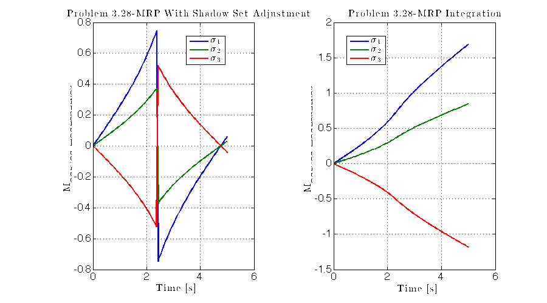

Contents
%>>>>>>>>>>>>>>>>>>>>>>>>>>>>>>>>>>>>>>>>>>>>>>>>>>>>>>>>> % HW3.m % Author : Zach Dischner % Date : 2/25/2012 % Description : Matlat script for all calculations required for % ASEN 5010 Homework 3 % % <<<<<<<<<<<<<<<<<<<<<<<<<<<<<<<<<<<<<<<<<<<<<<<<<<<<<<<< clc;clear all;close all
Problem 2: 3.23 - Verify Cayley Transformation
% Variables %--------------------------------------------- q = [0.5 -0.2 0.8]'; % Original CRP %--------------------------------------------- % Cayley Mapping %--------------------------------------------- sigma = tilde(q); I = eye(size(sigma)); C_caley = inv(I + sigma) * (I - sigma); %--------------------------------------------- % Traditional Mapping %--------------------------------------------- % Using Schaub's Methods Because They are Awesome C_trad = Gibbs2C(q); %--------------------------------------------- % Compare %--------------------------------------------- maxdif = max(max(C_caley - C_trad)); fprintf('\n Problem 3.23:\n') fprintf('---------------------------------------------\n\n') fprintf('Maximum difference between methods is: %3.5f\n\n',maxdif) fprintf('---------------------------------------------\n\n') %---------------------------------------------
Problem 3.23: --------------------------------------------- Maximum difference between methods is: 0.00000 ---------------------------------------------
Problem 4: 3.28 - Integrate Attitude Vector
% Variables %--------------------------------------------- % MRP MRPinit = [0 0 0]'; %--------------------------------------------- % Integration %--------------------------------------------- t = linspace(0,5,100); sigma = zeros(length(t),length(MRPinit)); sigma(1,:) = MRPinit; for ii=2:length(t) % Find the Derivative sigmaprime = diffMRP(t(ii),sigma(ii-1,:)); % General linear integration: % x_(n+1) = x_(n) + x'*delta_t sigma(ii,:) = MRPswitch(sigma(ii-1,:) + sigmaprime'*(t(ii)-t(ii-1)),1); end subplot(1,2,1) plot(t,sigma) title('Problem 3.28-MRP With Shadow Set Adjustment') xlabel('Time [s]'); ylabel('Modified Rodreguizes') legend('$\sigma_1$','$\sigma_2$','$\sigma_3$','location','best') subplot(1,2,2) [t,sig] = ode45(@diffMRP,t,MRPinit); % Just to be cool and verify my linear integrator plot(t,sig);title('Problem 3.28-MRP Integration') xlabel('Time [s]'); ylabel('Modified Rodreguizes') legend('$\sigma_1$','$\sigma_2$','$\sigma_3$','location','best') set(gcf,'Color',[1 1 1], 'Position',[10 (900) 900 500]) %---------------------------------------------
Problem 6, Triad Method
% Variables %--------------------------------------------- v1b = [0.8273 0.5541 -0.920]'; v2b = [-0.8285 0.5522 -0.0955]'; v3b = [0.2155 0.5522 0.8022]'; v4b = [0.5570 -0.7442 -0.2884]'; v1i = [-0.1517 -0.9669 0.2050]'; v2i = [-0.8393 0.4494 -0.3044]'; v3i = [-0.0886 -0.5856 -0.8000]'; v4i = [0.8814 -0.0303 0.5202]'; %--------------------------------------------- % Do the triad dood! %--------------------------------------------- BI{1} = triad(v1b/norm(v1b),v2b/norm(v2b),v1i/norm(v1i),v2i/norm(v2i)); BI{2} = triad(v1b/norm(v1b),v3b/norm(v3b),v1i/norm(v1i),v3i/norm(v3i)); BI{3} = triad(v1b/norm(v1b),v4b/norm(v4b),v1i/norm(v1i),v4i/norm(v4i)); %--------------------------------------------- % Output %--------------------------------------------- fprintf('\n\n\n Problem 6:\n') fprintf('---------------------------------------------\n\n') fprintf('Using [v1] and [v2] :\n') disp(BI{1}) fprintf('Using [v1] and [v3] :\n') disp(BI{2}) fprintf('Using [v1] and [v4] :\n') disp(BI{3}) fprintf('---------------------------------------------\n\n') %---------------------------------------------
Problem 6:
---------------------------------------------
Using [v1] and [v2] :
0.67044 -0.74155 -0.024726
-0.55549 -0.47957 -0.67929
0.49187 0.46916 -0.73345
Using [v1] and [v3] :
0.60649 -0.76906 -0.20179
-0.7213 -0.42542 -0.54657
0.3345 0.47704 -0.81274
Using [v1] and [v4] :
0.60585 -0.76923 -0.20307
-0.72242 -0.425 -0.54542
0.33325 0.47714 -0.81319
---------------------------------------------
Problem 7, Q Method
% Setup Variables %--------------------------------------------- % Arrays of observations vb = [v1b v2b v3b v4b]; vi = [v1i v2i v3i v4i]; % Weighting vector weights = [10,3,3,3]; %--------------------------------------------- % Do the Q method dood! %--------------------------------------------- q = doQmethod(vb,vi,weights); %--------------------------------------------- % Convert to PRV and compare %--------------------------------------------- PRV_triad = C2PRV(BI{1}); phiTriad = mod(PRV_triad(1),2*pi); PRV_q = EP2PRV(q); phi_q = mod(PRV_q(1),2*pi); %--------------------------------------------- % Output %--------------------------------------------- fprintf('\n\n\n Problem 7:\n') fprintf('---------------------------------------------\n\n') fprintf('Phi from the triad method is : [%3.5f] rad\n\n',phiTriad) fprintf('Phi from the Q method is : [%3.5f] rad\n\n',phi_q) fprintf('Difference between the two is : [%3.5f] rad\n\n',phi_q-phiTriad) fprintf('---------------------------------------------\n\n') %---------------------------------------------
Problem 7: --------------------------------------------- Phi from the triad method is : [4.07132] rad Phi from the Q method is : [4.42646] rad Difference between the two is : [0.35514] rad ---------------------------------------------
Problem 8, Quest Method
% Quest-imate the stuff! %--------------------------------------------- q_quest = doQuest(vb,vi,weights); PRV_quest = EP2PRV(q_quest); phi_quest = mod(PRV_quest(1),2*pi); %--------------------------------------------- % Output %--------------------------------------------- fprintf('\n\n\n Problem 8:\n') fprintf('---------------------------------------------\n\n') fprintf('Phi from the Q method is : [%3.5f] rad\n\n',phi_q) fprintf('Phi from the Quest method is : [%3.5f] rad\n\n',phi_quest) fprintf('Difference between the two is : [%3.5f] rad\n\n',phi_q-phi_quest) fprintf('---------------------------------------------\n\n\n') %---------------------------------------------
Problem 8: --------------------------------------------- Phi from the Q method is : [4.42646] rad Phi from the Quest method is : [5.14671] rad Difference between the two is : [-0.72025] rad ---------------------------------------------
Problem 9, #2.12 - Cloud Problem
% Variables %--------------------------------------------- m1 = 1; m2 = m1; m3 = 2; m4 = m3; R1 = [1 -1 2]'; R2 = [-1 -3 2]'; R3 = [2 -1 -1]'; R4 = [3 -1 -2]'; v1 = [2 1 1]'; v2 = [0 -1 1]'; v3 = [3 2 -1]'; v4 = [0 0 1]'; %--------------------------------------------- % Find Radii and Things %--------------------------------------------- M = m1 + m2 + m3 + m4; Rc = (R1*m1 + R2*m2 + R3*m3 + R4*m4)/M; r1 = R1 - Rc; r2 = R2 - Rc; r3 = R3 - Rc; r4 = R4 - Rc; p = v1*m1 + v2*m2 + v3*m3 + v4*m4; Rcdot = p/M; rd1 = v1 - Rcdot; rd2 = v2 - Rcdot; rd3 = v3 - Rcdot; rd4 = v4 - Rcdot; %--------------------------------------------- % Translational Kinetic Energy %--------------------------------------------- Ttrans = 0.5 * M *dot(Rcdot,Rcdot); %--------------------------------------------- % Rotational Kinetic Energy %--------------------------------------------- Tr = 0.5 * (dot(rd1,rd1)*m1 + dot(rd2,rd2)*m2 + dot(rd3,rd3)*m3 + dot(rd4,rd4)*m4); %--------------------------------------------- % Momentum Vector %--------------------------------------------- Hp_O = m1*cross(R1,v1) + m2*cross(R2,v2) + m3*cross(R3,v3) + m4*cross(R4,v4); Hp_RC = m1*cross(r1,rd1) + m2*cross(r2,rd2) + m3*cross(r3,rd3) + m4*cross(r4,rd4); %--------------------------------------------- fprintf('\n\n\n\n Problem 2.12:\n') fprintf('---------------------------------------------\n\n') fprintf('Translational Kinetic Energy is %3.5f \n\n',Ttrans) fprintf('Deformational/Rotational Kinetic Energy is %3.5f \n\n\n\n',Tr) fprintf('Angular velocity about Origin is:\n | %3.5f |\n | %3.5f |\n | %3.5f | \n\n',Hp_O(1),Hp_O(2),Hp_O(3)) fprintf('Angular velocity about center of mass is:\n | %3.5f |\n | %3.5f |\n | %3.5f | \n\n',Hp_RC(1),Hp_RC(2),Hp_RC(3)) fprintf('---------------------------------------------\n\n')
Problem 2.12: --------------------------------------------- Translational Kinetic Energy is 7.00000 Deformational/Rotational Kinetic Energy is 12.00000 Angular velocity about Origin is: | 0.00000 | | -4.00000 | | 18.00000 | Angular velocity about center of mass is: | 1.33333 | | 2.00000 | | 0.66667 | ---------------------------------------------
Problem 11, #4.1
Verify!!!
%--------------------------------------------- syms r1 r2 r3 w1 w2 w3 rtilde = tilde([r1 r2 r3]); Hc = -rtilde*rtilde; fprintf('\n\n\n\n Problem 4.1:\n') fprintf('---------------------------------------------\n\n') fprintf('Interior of momentum integral is: \n') disp(['| ',char(Hc(1,1)),' , ',char(Hc(1,2)),' , ',char(Hc(1,3)),' | ',char(w1)]) disp(['| ',char(Hc(2,1)),' , ',char(Hc(2,2)),' , ',char(Hc(2,3)),' | ',char(w2)]) disp(['| ',char(Hc(3,1)),' , ',char(Hc(3,2)),' , ',char(Hc(3,3)),' | ',char(w3)]) fprintf('\nWhich matches the form of EQ 4.13') fprintf('\n\n---------------------------------------------\n\n') %---------------------------------------------
Problem 4.1: --------------------------------------------- Interior of momentum integral is: | r2^2 + r3^2 , -r1*r2 , -r1*r3 | w1 | -r1*r2 , r1^2 + r3^2 , -r2*r3 | w2 | -r1*r3 , -r2*r3 , r1^2 + r2^2 | w3 Which matches the form of EQ 4.13 ---------------------------------------------
Problem 12, #4.3
clear all % variables %--------------------------------------------- b1 = [0 1 0]'; b2 = [0 0 1]'; b3 = [1 0 0]'; I = [15 0 0; 0 11 5; 0 5 16]; %--------------------------------------------- % a-Principal inertias %--------------------------------------------- [vec PI] = eig(I); %--------------------------------------------- % b-Find BF so that I is diagonal %--------------------------------------------- C = vec'; %--------------------------------------------- % c-Find Principal body axes expressed in N frame components %--------------------------------------------- PBA = C*[b1 b2 b3]'; % C*BN ==> FB*BN %--------------------------------------------- fprintf('\n\n\n\n Problem 4.3:\n') fprintf('---------------------------------------------\n\n') fprintf('\na:\n') diag(PI) fprintf('\n\nb:\n') C fprintf('\n\nc:\n') PBA fprintf('\n\n---------------------------------------------\n\n') % Variables %--------------------------------------------- %---------------------------------------------
Problem 4.3:
---------------------------------------------
a:
ans =
7.9098
15
19.09
b:
C =
0 -0.85065 0.52573
1 0 0
0 0.52573 0.85065
c:
PBA =
0.52573 0 -0.85065
0 1 0
0.85065 0 0.52573
---------------------------------------------